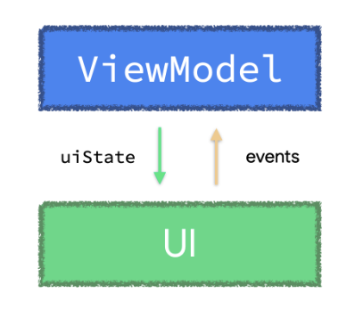

Antipattern - ViewModel event 1 lần
Bạn nên xử lý ngay các event ViewModel bằng cách update UI state
ViewModel event là các hành động bắt nguồn từ ViewModel mà UI cần thực hiện. Chẳng hạn như hiển thị thông báo cho người dùng hoặc chuyển hướng đến một màn hình khác khi state ứng dụng thay đổi.
Hướng dẫn của Google về event ViewModel có hai quan điểm chính:
- Bất cứ khi nào một event một lần xuất hiện trong ViewModel, ViewModel nên xử lý event đó ngay lập tức, bằng cách tạo ra cập nhật state. ViewModel chỉ nên công khai state ứng dụng. Việc công khai các event chưa được rút gọn thành state từ ViewModel có nghĩa là ViewModel không phải là source of truth cho state được suy ra từ các event đó. Unidirectional Data Flow (UDF) mô tả những lợi thế của việc chỉ gửi event đến các object tiêu thụ tồn tại lâu hơn đối tượng tạo ra chúng.
- State của ứng dụng nên được công khai thông qua một trình giữ dữ liệu có thể observable.

Trong ứng dụng của bạn, bạn có thể đang sử dụng Kotlin Channels hoặc các reactive streams khác như SharedFlow để truyền event từ ViewModel đến UI, hoặc có thể bạn đã thấy mô hình này trong các dự án khác. Tuy nhiên, khi producer (ViewModel) tồn tại lâu hơn consumer (UI - Compose hoặc Views), như trường hợp của các event ViewModel, các API này KHÔNG ĐẢM BẢO việc gửi và xử lý các event đó. Điều này có thể dẫn đến lỗi và các vấn đề trong tương lai cho developer, đồng thời mang lại trải nghiệm người dùng không mong muốn cho hầu hết các ứng dụng.
Bạn nên xử lý các event ViewModel ngay lập tức, bằng cách cập nhật UI state. Việc cố gắng công khai các event dưới dạng đối tượng bằng cách sử dụng các giải pháp reactive khác như Channel hoặc SharedFlow không đảm bảo việc gửi và xử lý các event đó.
Case Study
Dưới đây là một ví dụ về việc triển khai ViewModel trong flow thanh toán điển hình của một ứng dụng. Trong đoạn code sau, MakePaymentViewModel trực tiếp yêu cầu UI điều hướng đến màn hình kết quả thanh toán khi kết quả của yêu cầu thanh toán được trả về. Chúng ta sẽ sử dụng ví dụ này để khám phá lý do tại sao việc xử lý các event một lần của ViewModel như thế này lại gây ra các vấn đề và chi phí kỹ thuật cao hơn.
class MakePaymentViewModel(...) : ViewModel() {
val uiState: StateFlow<MakePaymentUiState> = /* ... */
// ⚠️⚠️ DO NOT DO THIS!! ⚠️⚠️
// This one-off ViewModel event hasn't been handled nor reduced to state
// Boolean represents whether or not the payment was successful
private val _navigateToPaymentResultScreen = Channel<Boolean>()
// `receiveAsFlow` makes sure only one collector will process each
// navigation event to avoid multiple back stack entries
val navigateToPaymentResultScreen = _navigateToPaymentResultScreen.receiveAsFlow()
// Protecting makePayment from concurrent callers
// If a payment is in progress, don't trigger it again
private var makePaymentJob: Job? = null
fun makePayment() {
if (makePaymentJob != null) return
makePaymentJob = viewModelScope.launch {
try {
_uiState.update { it.copy(isLoading = true) } // Show loading spinner
val isPaymentSuccessful = paymentsRepository.makePayment(...)
_navigateToPaymentResultScreen.send(isPaymentSuccessful)
} catch (ioe: IOException) { ... }
finally { makePaymentJob = null }
}
}
}
UI sẽ nhận event này và di chuyển theo:
//////////////////////////////////////////////
// Jetpack Compose code
//////////////////////////////////////////////
@Composable
fun MakePaymentScreen(
onPaymentMade: (Boolean) -> Unit,
viewModel: MakePaymentViewModel = viewModel()
) {
val currentOnPaymentMade by rememberUpdatedState(onPaymentMade)
val lifecycle = LocalLifecycleOwner.current.lifecycle
// Check whenever navigateToPaymentResultScreen emits a new value
// to tell the caller composable the payment was made
LaunchedEffect(viewModel, lifecycle) {
lifecycle.repeatOnLifecycle(state = STARTED) {
viewModel.navigateToPaymentResultScreen.collect { isPaymentSuccessful ->
currentOnPaymentMade(isPaymentSuccessful)
}
}
}
// Rest of the UI for the login screen.
}
//////////////////////////////////////////////
// Activity / Views code
//////////////////////////////////////////////
class MakePaymentActivity : AppCompatActivity() {
private val viewModel: MakePaymentViewModel by viewModels()
override fun onCreate(savedInstanceState: Bundle?) {
/* ... */
lifecycleScope.launch {
repeatOnLifecycle(Lifecycle.State.STARTED) {
viewModel.navigateToPaymentResultScreen.collect { isPaymentSuccessful ->
val intent = Intent(this, PaymentResultActivity::class.java)
intent.putExtra("PAYMENT_RESULT", isPaymentSuccessful)
startActivity(intent)
finish()
}
}
}
}
}
Đoạn code thực hiện việc navigateToPaymentResultScreen trong ví dụ trên đó có một số lỗi thiết kế.
Antipattern #1: Trạng thái về việc hoàn tất thanh toán có thể bị mất
Một Channel không đảm bảo việc phân phối và xử lý các event. Do đó, các event có thể bị mất, dẫn đến UI ở trạng thái không nhất quán. Ví dụ về điều này có thể xảy ra khi UI (người tiêu thụ) chuyển sang chế độ nền và dừng việc thu thập Channel ngay sau khi ViewModel (producer) gửi một event. Điều tương tự cũng có thể xảy ra với các API khác không phải là một loại trình giữ dữ liệu observable, chẳng hạn như SharedFlow, có thể phát ra các event ngay cả khi không có consumer nào lắng nghe chúng.
Đây là một antipattern vì trạng thái kết quả thanh toán được mô hình hóa trong lớp UI không bền vững hoặc không nguyên tử nếu chúng ta nghĩ về nó theo thuật ngữ của một giao dịch ACID. Việc thanh toán có thể đã thành công theo như repository được biết, nhưng chúng ta chưa bao giờ được chuyển sang màn hình phù hợp tiếp theo.
Lưu ý: Antipattern này có thể được giảm thiểu bằng cách sử dụng Dispatchers.Main.immediate khi gửi và nhận các event. Tuy nhiên, nếu điều đó không được thực thi bởi lint, giải pháp này có thể dễ xảy ra lỗi vì các developer có thể dễ dàng quên nó.
Antipattern #2: Bắt UI hành động
Đối với ứng dụng hỗ trợ nhiều kích thước màn hình, hành động UI cần thực hiện khi xảy ra ViewModel event có thể khác nhau tùy thuộc vào kích thước màn hình. Ví dụ: ứng dụng case study nên điều hướng đến màn hình kết quả thanh toán khi chạy trên điện thoại di động; nhưng nếu ứng dụng đang chạy trên máy tính bảng, hành động có thể hiển thị kết quả trong một phần khác của cùng một màn hình.
ViewModel nên cho UI biết state ứng dụng là gì và UI nên xác định cách xử lý đối với state điều đó. ViewModel không nên cho UI biết hành động nào cần thực hiện.
Antipattern #3: Không xử lý event 1 lần ngay lập tức
Tạo event theo kiểu bắn ra và quên là thứ sẽ tạo ra vấn đề. Nó sẽ rất khó để tuân thử theo các tính chất ACID, cho nên việc đảm bảo độ tin cậy và toàn vẹn dữ liệu không được chắc chắn. State là event đã xảy ra. Sự kiện không được xử lý càng lâu thì vấn đề càng khó sẽ xảy ra.
Trong case study ở trên, chúng ta đã tạo 1 object cho event - đại diện là kiểu Boolean - công khai nó bằng Channel.
// Create Channel with the event modeled as a Boolean
val _navigateToPaymentResultScreen = Channel<Boolean>()
// Trigger event
_navigateToPaymentResultScreen.send(isPaymentSuccessful)
Một khi làm điều này thì bạn phải chịu trách nhiệm đảm bảo rằng mọi thứ chắc chắn khi truyền và xử lý một lần. Nếu bạn phải xây dựng 1 event là một object vì một vài lý do, hãy giới hạn thời gian sống để nó càng ngắn càng tốt thì nó sẽ không có cơ hội bị thất lạc.
Xử lý event 1 lần trong ViewModel thường được thực hiện bằng cách gọi method - Ví dụ, cập nhật UI. Một khi ban gọi method đó, bạn biết khi nào nó hoàn thành thành công hoặc bắn ra 1 exception, và bạn biết rằng nó sẽ xảy ra chính xác 1 lần.
Cải thiện Case Study
Nếu bạn bị mắc phải 1 trong những trường hợp trên. Hãy xem xét lại rằng event 1 lần trong ViewModel có thực sự có ý nghĩa cho UI của bạn không. Xử lý chúng ngay lập tức và giảm thiểu chúng bằng UI state được công khai bằng observale data hodler như là StateFlow hoặc mutableStateOf.
UI state nên diễn tả cho UI tại thời điểm được cho, nó tạo ra một sự đảm bảo tốt hơn trong quá trình truyền và xử lý, nó thường dễ hơn để test, và còn tích hợp một cách nhất quán với phần còn lại của app.
Nếu mà bạn còn gặp khó khắn trong việc tìm cách giảm thiểu event 1 lần trong ViewModel để thành state, hãy xem xét lại event đó có thực sự có tác dụng với UI của bạn hay không.
Trong ví dụ phía trên, ViewModel nên xuất data thực sự của app - thông tin thanh toán đối với trường hợp này - thay vì đưa action cho UI để nó xử lý. Cách phía dưới là phương án tốt hơn về cách mà event trong ViewModel được xử lý, chuyển thành state, và công khai bằng cách dùng observable data holder.
data class MakePaymentUiState(
val paymentInformation: PaymentModel,
val isLoading: Boolean = false,
// PaymentResult models the application state of this particular payment attempt,
// `null` represents the payment hasn't been made yet.
val paymentResult: PaymentResult? = null
)
class MakePaymentViewModel(...) : ViewModel() {
private val _uiState = MutableStateFlow<MakePaymentUiState>(...)
val uiState: StateFlow<MakePaymentUiState> = _uiState.asStateFlow()
// Protecting makePayment from concurrent callers
// If a payment is in progress, don't trigger it again
private var makePaymentJob: Job? = null
fun makePayment() {
if (makePaymentJob != null) return
makePaymentJob = viewModelScope.launch {
try {
_uiState.update { it.copy(isLoading = true) }
val isPaymentSuccessful = paymentsRepository.makePayment(...)
// The event of what to do when the payment response comes back
// is immediately handled here. It causes a UI state update.
_uiState.update {
it.copy(
isLoading = false,
paymentResult = PaymentResult(it.paymentInfo, isPaymentSuccessful)
)
}
} catch (ioe: IOException) { ... }
finally { makePaymentJob = null }
}
}
}
Trong đoạn code phía trên, event được xử lý ngay lập tức bằng cách gọi _uiState.update với paymentResult data. Không có cách gì mà event có thể bị mất. Event đã được chuyển thành state,và field paymentResult trong MakePaymentUiState phản ánh data kết quả thanh toán.
Với điều này, Ui sẽ phản ứng với sự thay đổi kết quả thanh toán theo nó như sau:
//////////////////////////////////////////////
// Jetpack Compose code
//////////////////////////////////////////////
@Composable
fun MakePaymentScreen(
onPaymentMade: (PaymentModel, Boolean) -> Unit,
viewModel: MakePaymentViewModel = viewModel()
) {
val uiState by viewModel.uiState.collectAsState()
uiState.paymentResult?.let {
val currentOnPaymentMade by rememberUpdatedState(onPaymentMade)
LaunchedEffect(uiState) {
// Tell the caller composable that the payment was made.
// the parent composable will act accordingly.
currentOnPaymentMade(
uiState.paymentResult.paymentModel,
uiState.paymentResult.isPaymentSuccessful
)
}
}
// Rest of the UI for the login screen.
}
//////////////////////////////////////////////
// Activity / Views code
//////////////////////////////////////////////
class MakePaymentActivity : AppCompatActivity() {
private val viewModel: MakePaymentViewModel by viewModels()
override fun onCreate(savedInstanceState: Bundle?) {
/* ... */
lifecycleScope.launch {
repeatOnLifecycle(Lifecycle.State.STARTED) {
viewModel.uiState.collect { uiState ->
if (uiState.paymentResult != null) {
val intent = Intent(this, PaymentResultActivity::class.java)
intent.putExtra(
"PAYMENT_RESULT",
uiState.paymentResult.isPaymentSuccessful
)
startActivity(intent)
finish()
}
}
}
}
}
}
Chú ý: Nếu trong trương hợp mà Activity không finish() và được giữ trong backstack, ViewModel sẽ cần phải đưa ra 1 function để clear paymentResult trong UiState(ví dụ: đưa field đó về null) nó sẽ được gọi sau khi Activity gọi Activity mới. Ví dụ về cái này có thể tìm ở đây, trong phần Consuming events can trigger state updates của tài liệu.
Như đã đề cập ở Consuming events can trigger state updates, bạn có thể xuất UI state với màn hình của bạn với nhiều stream nếu điều đó là cần thiết. Điều quan trọng là các stream là observable data holder. Trong ví dụ trên, stream UI state duy nhất được hiển thị do cờ isLoading và thuộc tính PaymentResult có mối liên hệ chặt chẽ với nhau. Việc tách chúng ra có thể gây ra sự không nhất quán trong giao diện người dùng — ví dụ: nếu isLoading là true và PaymentResult không rỗng. Bằng cách kết hợp chúng trong cùng một class UiState, chúng ta nhận thức rõ hơn về các field khác nhau tạo nên UI state của màn hình, giúp chúng ta gặp ít lỗi hơn.
Hy vọng rằng bài đăng trên blog này đã giúp bạn hiểu lý do tại sao tôi khuyên bạn nên 1) xử lý ngay các sự kiện ViewModel một lần và chuyển thành state và 2) hiển thị trạng thái bằng cách sử dụng observable data holder. Tôi tin rằng phương pháp này mang lại cho bạn sự đảm bảo về việc truyền và xử lý hơn, phương pháp này thường dễ để test hơn và tích hợp nhất quán với phần còn lại của ứng dụng.
Để biết thêm thông tin về chủ đề này, hãy xem tài liệu về UI event documentation.